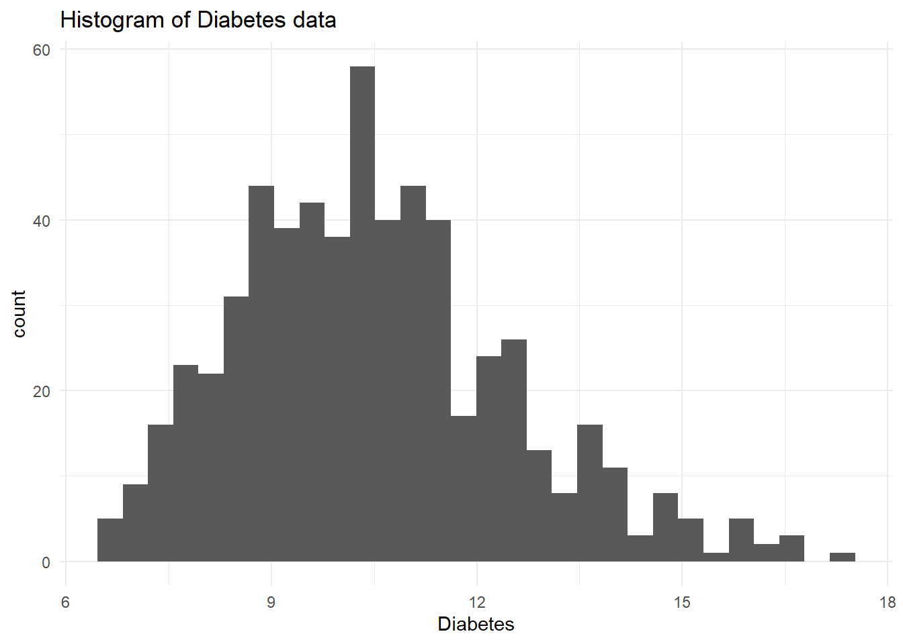
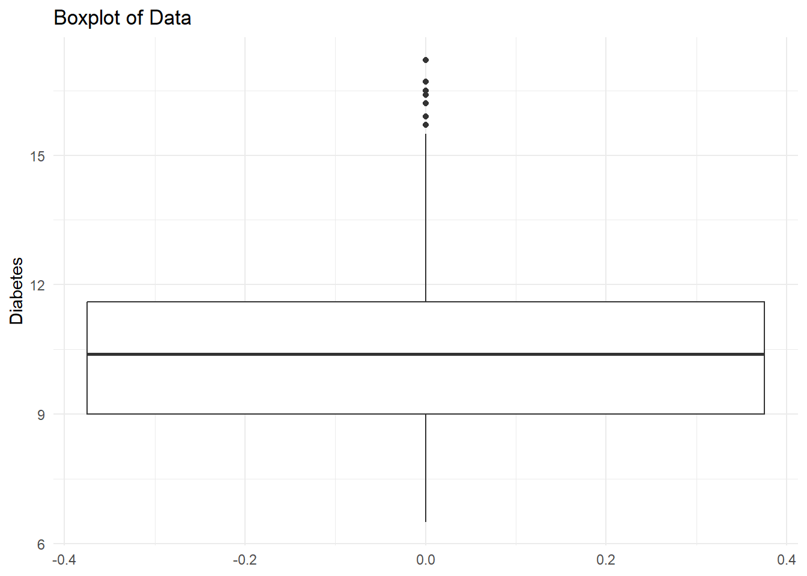
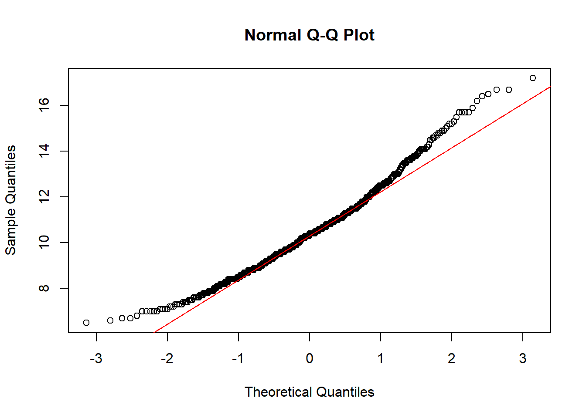

Code
#Loading required packages
library(tidyverse)
library(ggplot2)
library(plotly)
library(ggthemes)
library(DT)Please click the link below to access files.
Note that due to the large size of the data, it will not be hosted on GitHub. Instead, all the data will be hosted on the GUdomain.
# A tibble: 6 × 26
YearStart YearEnd LocationAbbr LocationDesc DataSource Topic Question
<dbl> <dbl> <chr> <chr> <chr> <chr> <chr>
1 2010 2010 OR Oregon NVSS Cardiovascu… Mortali…
2 2019 2019 AZ Arizona YRBSS Alcohol Alcohol…
3 2019 2019 OH Ohio YRBSS Alcohol Alcohol…
4 2019 2019 US United States YRBSS Alcohol Alcohol…
5 2015 2015 VI Virgin Islands YRBSS Alcohol Alcohol…
6 2020 2020 AL Alabama PRAMS Alcohol Alcohol…
# ℹ 19 more variables: DataValueUnit <chr>, DataValueType <chr>,
# DataValue <chr>, DataValueAlt <dbl>, DataValueFootnoteSymbol <chr>,
# DatavalueFootnote <chr>, LowConfidenceLimit <dbl>,
# HighConfidenceLimit <dbl>, GeoLocation <chr>, LocationID <chr>,
# TopicID <chr>, QuestionID <chr>, DataValueTypeID <chr>, Race <chr>,
# Gender <chr>, Overall <chr>, RaceID <chr>, GenderID <chr>, OverallID <chr>Rows: 1,185,676
Columns: 26
$ YearStart <dbl> 2010, 2019, 2019, 2019, 2015, 2020, 2015, 2019…
$ YearEnd <dbl> 2010, 2019, 2019, 2019, 2015, 2020, 2015, 2019…
$ LocationAbbr <chr> "OR", "AZ", "OH", "US", "VI", "AL", "DE", "FL"…
$ LocationDesc <chr> "Oregon", "Arizona", "Ohio", "United States", …
$ DataSource <chr> "NVSS", "YRBSS", "YRBSS", "YRBSS", "YRBSS", "P…
$ Topic <chr> "Cardiovascular Disease", "Alcohol", "Alcohol"…
$ Question <chr> "Mortality from heart failure", "Alcohol use a…
$ DataValueUnit <chr> NA, "%", "%", "%", "%", "%", "%", "%", "%", "%…
$ DataValueType <chr> "Number", "Crude Prevalence", "Crude Prevalenc…
$ DataValue <chr> "30", "29.5", "22.5", "13.9", NA, "59.1", "55.…
$ DataValueAlt <dbl> 30.0, 29.5, 22.5, 13.9, NA, 59.1, 55.6, 58.1, …
$ DataValueFootnoteSymbol <chr> NA, NA, NA, NA, "-", NA, NA, NA, NA, "-", NA, …
$ DatavalueFootnote <chr> NA, NA, NA, NA, "No data available", NA, NA, N…
$ LowConfidenceLimit <dbl> NA, 24.9, 17.0, 10.4, NA, 53.9, 52.3, 54.2, 58…
$ HighConfidenceLimit <dbl> NA, 34.7, 29.1, 18.4, NA, 64.0, 58.9, 61.8, 66…
$ GeoLocation <chr> "POINT (-120.15503132599969 44.56744942400047)…
$ LocationID <chr> "41", "04", "39", "59", "78", "01", "10", "12"…
$ TopicID <chr> "CVD", "ALC", "ALC", "ALC", "ALC", "ALC", "ALC…
$ QuestionID <chr> "CVD1_4", "ALC1_1", "ALC1_1", "ALC1_1", "ALC1_…
$ DataValueTypeID <chr> "NMBR", "CRDPREV", "CRDPREV", "CRDPREV", "CRDP…
$ Race <chr> "American Indian or Alaska Native", NA, NA, "A…
$ Gender <chr> NA, "Female", "Male", NA, "Male", NA, NA, NA, …
$ Overall <chr> NA, NA, NA, NA, NA, NA, "Overall", "Overall", …
$ RaceID <chr> "AIAN", NA, NA, "ASN", NA, "WHT", NA, NA, NA, …
$ GenderID <chr> NA, "GENF", "GENM", NA, "GENM", NA, NA, NA, NA…
$ OverallID <chr> NA, NA, NA, NA, NA, NA, "OVR", "OVR", "OVR", "…This data ranges from 2001 to 2021.
[1] "Number"
[2] "Crude Prevalence"
[3] "Age-adjusted Rate"
[4] "Crude Rate"
[5] "Average Annual Number"
[6] "Average Annual Crude Rate"
[7] "Average Annual Age-adjusted Rate"
[8] "Adjusted by age, sex, race and ethnicity"
[9] "Age-adjusted Prevalence"
[10] "Mean"
[11] "Age-adjusted Mean"
[12] "Median"
[13] "Percent"
[14] "Local control of the regulation of alcohol outlet density"
[15] "US Dollars"
[16] "Commercial host (dram shop) liability status for alcohol service"
[17] "Per capita alcohol consumption"
[18] "Prevalence"
[19] "Yes/No" [1] "Oregon" "Arizona" "Ohio"
[4] "United States" "Virgin Islands" "Alabama"
[7] "Delaware" "Florida" "Kansas"
[10] "Mississippi" "New Jersey" "Pennsylvania"
[13] "South Dakota" "Vermont" "Alaska"
[16] "Arkansas" "Colorado" "Connecticut"
[19] "District of Columbia" "Georgia" "Hawaii"
[22] "Iowa" "Idaho" "Indiana"
[25] "Kentucky" "Louisiana" "Massachusetts"
[28] "Maine" "Michigan" "Minnesota"
[31] "Missouri" "Montana" "North Dakota"
[34] "Nebraska" "New Hampshire" "New Mexico"
[37] "Nevada" "New York" "Oklahoma"
[40] "Rhode Island" "South Carolina" "Tennessee"
[43] "Texas" "Utah" "Virginia"
[46] "Washington" "Wisconsin" "West Virginia"
[49] "Wyoming" "California" "North Carolina"
[52] "Guam" "Illinois" "Puerto Rico"
[55] "Maryland" This comprehensive dataset includes all U.S. territories, both within and outside North America.
[1] "Cardiovascular Disease"
[2] "Alcohol"
[3] "Arthritis"
[4] "Asthma"
[5] "Cancer"
[6] "Chronic Kidney Disease"
[7] "Chronic Obstructive Pulmonary Disease"
[8] "Mental Health"
[9] "Tobacco"
[10] "Overarching Conditions"
[11] "Oral Health"
[12] "Reproductive Health"
[13] "Diabetes"
[14] "Immunization"
[15] "Nutrition, Physical Activity, and Weight Status"
[16] "Disability"
[17] "Older Adults" There are a total of 17 categories, encompassing Cardiovascular diseases, Cancer, diabetes, and other areas of research inquiry.
Topic: Cardiovascular Disease
Questions:
Mortality from heart failure
Mortality from coronary heart disease
High cholesterol prevalence among adults aged >= 18 years
Cholesterol screening among adults aged >= 18 years
Awareness of high blood pressure among women aged 18-44 years
Awareness of high blood pressure among adults aged >= 18 years
Mortality from total cardiovascular diseases
Mortality from diseases of the heart
Mortality from cerebrovascular disease (stroke)
Hospitalization for stroke
Hospitalization for heart failure among Medicare-eligible persons aged >= 65 years
Hospitalization for acute myocardial infarction
Taking medicine for high blood pressure control among adults aged >= 18 years with high blood pressure
Pre-pregnancy hypertension
Influenza vaccination among noninstitutionalized adults aged >= 65 years with a history of coronary heart disease or stroke
Pneumococcal vaccination among noninstitutionalized adults aged >= 65 years with a history of coronary heart disease
Pneumococcal vaccination among noninstitutionalized adults aged 18-64 years with a history of coronary heart disease
Influenza vaccination among noninstitutionalized adults aged 18-64 years with a history of coronary heart disease or stroke
Topic: Alcohol
Questions:
Alcohol use among youth
Alcohol use before pregnancy
Binge drinking prevalence among youth
Chronic liver disease mortality
Binge drinking frequency among adults aged >= 18 years who binge drink
Binge drinking prevalence among women aged 18-44 years
Binge drinking intensity among adults aged >= 18 years who binge drink
Binge drinking prevalence among adults aged >= 18 years
Heavy drinking among adults aged >= 18 years
Heavy drinking among women aged 18-44 years
Local authority to regulate alcohol outlet density
Amount of alcohol excise tax by beverage type (beer)
Amount of alcohol excise tax by beverage type (wine)
Amount of alcohol excise tax by beverage type (distilled spirits)
Commercial host (dram shop) liability laws
Per capita alcohol consumption among persons aged >= 14 years
Topic: Arthritis
Questions:
Adults aged >= 18 years with arthritis who have taken a class to learn how to manage arthritis symptoms
Arthritis among adults aged >= 18 years who are obese
Arthritis among adults aged >= 18 years who have diabetes
Arthritis among adults aged >= 18 years
Physical inactivity among adults aged >= 18 years with arthritis
Fair or poor health among adults aged >= 18 years with arthritis
Arthritis among adults aged >= 18 years who have heart disease
Work limitation due to arthritis among adults aged 18-64 years who have doctor-diagnosed arthritis
Activity limitation due to arthritis among adults aged >= 18 years who have doctor-diagnosed arthritis
Severe joint pain due to arthritis among adults aged >= 18 years who have doctor-diagnosed arthritis
Topic: Asthma
Questions:
Emergency department visit rate for asthma
Hospitalizations for asthma
Asthma mortality rate
Influenza vaccination among noninstitutionalized adults aged >= 65 years with asthma
Influenza vaccination among noninstitutionalized adults aged 18-64 years with asthma
Pneumococcal vaccination among noninstitutionalized adults aged 18-64 years with asthma
Current asthma prevalence among adults aged >= 18 years
Pneumococcal vaccination among noninstitutionalized adults aged >= 65 years with asthma
Asthma prevalence among women aged 18-44 years
Topic: Cancer
Questions:
Invasive cancer of the oral cavity or pharynx, incidence
Cancer of the oral cavity and pharynx, mortality
Invasive cancer of the prostate, incidence
Cancer of the prostate, mortality
Invasive cancer (all sites combined), incidence
Invasive cancer (all sites combined), mortality
Invasive cancer of the female breast, incidence
Melanoma, mortality
Cancer of the female breast, mortality
Invasive cancer of the cervix, incidence
Cancer of the female cervix, mortality
Cancer of the colon and rectum (colorectal), incidence
Cancer of the colon and rectum (colorectal), mortality
Cancer of the lung and bronchus, incidence
Cancer of the lung and bronchus, mortality
Invasive melanoma, incidence
Fecal occult blood test, sigmoidoscopy, or colonoscopy among adults aged 50-75 years
Mammography use among women aged 50-74 years
Papanicolaou smear use among adult women aged 21-65 years
Recent Papanicolaou smear use among women aged 21-44 years
Topic: Chronic Kidney Disease
Questions:
Mortality with end-stage renal disease
Incidence of treated end-stage renal disease
Incidence of treated end-stage renal disease attributed to diabetes
Prevalence of chronic kidney disease among adults aged >= 18 years
Topic: Chronic Obstructive Pulmonary Disease
Questions:
Mortality with chronic obstructive pulmonary disease as underlying cause among adults aged >= 45 years
Mortality with chronic obstructive pulmonary disease as underlying or contributing cause among adults aged >= 45 years
Hospitalization for chronic obstructive pulmonary disease as first-listed diagnosis
Hospitalization for chronic obstructive pulmonary disease as any diagnosis
Hospitalization for chronic obstructive pulmonary disease as first-listed diagnosis among Medicare-eligible persons aged >= 65 years
Hospitalization for chronic obstructive pulmonary disease as any diagnosis among Medicare-eligible persons aged >= 65 years
Emergency department visit rate for chronic obstructive pulmonary disease as first-listed diagnosis
Emergency department visit rate for chronic obstructive pulmonary disease as any diagnosis
Prevalence of chronic obstructive pulmonary disease among adults >= 18
Prevalence of chronic obstructive pulmonary disease among adults >= 45 years
Prevalence of current smoking among adults >= 18 with diagnosed chronic obstructive pulmonary disease
Prevalence of current smoking among adults >= 45 years with diagnosed chronic obstructive pulmonary disease
Pneumococcal vaccination among noninstitutionalized adults aged >= 45 years with chronic obstructive pulmonary disease
Prevalence of activity limitation among adults >= 45 years with diagnosed chronic obstructive pulmonary disease
Influenza vaccination among noninstitutionalized adults aged >= 45 years with chronic obstructive pulmonary disease
Prevalence of activity limitation among adults >= 18 with diagnosed chronic obstructive pulmonary disease
Topic: Mental Health
Questions:
At least 14 recent mentally unhealthy days among women aged 18-44 years
Recent mentally unhealthy days among adults aged >= 18 years
Postpartum depressive symptoms
Topic: Tobacco
Questions:
Pneumococcal vaccination among noninstitutionalized adults aged 18-64 years who smoke
Quit attempts in the past year among current smokers
Current cigarette smoking among women aged 18-44 years
Current smoking among adults aged >= 18 years
Current smokeless tobacco use among adults aged >= 18 years
Current cigarette smoking among youth
Cigarette smoking before pregnancy
Pneumococcal vaccination among noninstitutionalized adults aged >= 65 years who smoke
Sale of cigarette packs
Amount of tobacco product excise tax
Current smokeless tobacco use among youth
States that allow stronger local tobacco control and prevention laws
States with strong polices that require retail licenses to sell tobacco products
Proportion of the population protected by a comprehensive smoke-free policy prohibiting smoking in all indoor areas of workplaces and public places, including restaurants and bars
Secondary schools that have a comprehensive tobacco-free school policy in place
Percent tobacco revenue to fund at CDC recommended level
Topic: Overarching Conditions
Questions:
Recent activity limitation among adults aged >= 18 years
Prevalence of sufficient sleep among adults aged >= 18 years
Current health care coverage among women aged 18-44 years
Recent physically unhealthy days among adults aged >= 18 years
Fair or poor self-rated health status among adults aged >= 18 years
Current lack of health insurance among adults aged 18-64 years
Self-rated health status among women aged 18-44 years
Premature mortality among adults aged 45-64 years
Poverty
Life expectancy at age 65 years
High school completion among adults aged 18-24 years
High school completion among women aged 18-44 years
Health insurance coverage before pregnancy
Poverty among women aged 18-44 years
Life expectancy at birth
Gini Index of income inequality
Topic: Oral Health
Questions:
Six or more teeth lost among adults aged >= 65 years
Visits to dentist or dental clinic among adults aged >= 18 years
All teeth lost among adults aged >= 65 years
No tooth loss among adults aged 18-64 years
Preventive dental care before pregnancy
Oral health services at Federally Qualified Health Centers
Population served by community water systems that receive fluoridated drinking water
Dental visits among children and adolescents aged 1-17 years
Preventive dental visits among children and adolescents aged 1-17 years
Topic: Reproductive Health
Questions:
Timeliness of routine health care checkup among women aged 18-44 years
Postpartum checkup
Folic acid supplementation
Topic: Diabetes
Questions:
Prevalence of diagnosed diabetes among adults aged >= 18 years
Visits to dentist or dental clinic among adults aged >= 18 years with diagnosed diabetes
Foot examination among adults aged >= 18 years with diagnosed diabetes
Prevalence of high cholesterol among adults aged >= 18 years with diagnosed diabetes
Influenza vaccination among noninstitutionalized adults aged >= 65 years with diagnosed diabetes
Influenza vaccination among noninstitutionalized adults aged 18-64 years with diagnosed diabetes
Pneumococcal vaccination among noninstitutionalized adults aged 18-64 years with diagnosed diabetes
Dilated eye examination among adults aged >= 18 years with diagnosed diabetes
Prevalence of depressive disorders among adults aged >= 18 years with diagnosed diabetes
Glycosylated hemoglobin measurement among adults aged >= 18 years with diagnosed diabetes
Diabetes prevalence among women aged 18-44 years
Mortality due to diabetes reported as any listed cause of death
Mortality with diabetic ketoacidosis reported as any listed cause of death
Prevalence of pre-pregnancy diabetes
Amputation of a lower extremity attributable to diabetes
Hospitalization with diabetes as a listed diagnosis
Pneumococcal vaccination among noninstitutionalized adults aged >= 65 years with diagnosed diabetes
Prevalence of high blood pressure among adults aged >= 18 years with diagnosed diabetes
Adults with diagnosed diabetes aged >= 18 years who have taken a diabetes self-management course
Prevalence of gestational diabetes
Topic: Immunization
Questions:
Influenza vaccination among noninstitutionalized adults aged >= 18 years
Topic: Nutrition, Physical Activity, and Weight Status
Questions:
Healthy weight among adults aged >= 18 years
Overweight or obesity among women aged 18-44 years
Overweight or obesity among adults aged >= 18 years
No leisure-time physical activity among adults aged >= 18 years
Obesity among adults aged >= 18 years
Meeting aerobic physical activity guidelines among high school students
Soda consumption among high school students
Obesity among high school students
Television viewing among high school students
Computer use among high school students
Overweight or obesity among high school students
Healthy weight among high school students
Median daily frequency of fruit consumption among high school students
Median daily frequency of vegetable consumption among high school students
Participation in daily school physical education classes among high school students
Live births occurring at Baby Friendly Facilities
Secondary schools that allow community-sponsored use of physical activity facilities by youth outside of normal school hours
Infants breastfed at 6 months
Receiving formula supplementation within the first 2 days of life among breastfed infants
Mean maternity practices in infant nutrition care (mPINC) score
Secondary schools that allow students to purchase soda or fruit drinks
Secondary schools that offer less healthy foods as competitive foods
Presence of regulations pertaining to screen time in early care and education settings
Secondary schools that allow students to purchase sports drinks
State child care regulation supports onsite breastfeeding
Presence of regulations pertaining to avoiding sugar in early care and education settings
Number of farmers markets per 100,000 residents
Census tracts with healthier food retailers within � mile of boundary
Farmers markets that accept Women and Infant Children (WIC) farmers market nutrition program coupons
Presence of regulations pertaining to serving fruit in early care and education settings
Presence of regulations pertaining to serving vegetables in early care and education settings
Farmers markets that accept Supplemental Nutrition Assistance Program (SNAP) benefits
Meeting aerobic physical activity guidelines for additional and more extensive health benefits among adults aged >= 18 years
Meeting aerobic physical activity guidelines for substantial health benefits and for muscle-strengthening activity among adults aged >= 18 years
Meeting aerobic physical activity guidelines for substantial health benefits among adults aged >= 18 years
Median daily frequency of vegetable consumption among adults aged >= 18 years
Median daily frequency of fruit consumption among adults aged >= 18 years
Topic: Disability
Questions:
Disability among adults aged >= 65 years
Topic: Older Adults
Questions:
Hospitalization for hip fracture among Medicare-eligible persons aged >= 65 years
Prevalence of 2 or more chronic conditions among Medicare-enrolled persons aged >= 65 years
Proportion of older adults aged >= 65 years who are up to date on a core set of clinical preventive services
Proportion of older adults aged 50-64 years who are up to date on a core set of clinical preventive services We obtain a list of questions for each distinct topic, which gives a more comprehensive understanding on how the data is structured around types of topics and types of questions.
YearStart YearEnd
Min. :2001 Min. :2001
1st Qu.:2013 1st Qu.:2013
Median :2015 Median :2016
Mean :2015 Mean :2016
3rd Qu.:2018 3rd Qu.:2018
Max. :2021 Max. :2021 # A tibble: 19 × 6
DataValueType Mean Median SD Min Max
<chr> <dbl> <dbl> <dbl> <dbl> <dbl>
1 Adjusted by age, sex, race and eth… 261. 221. 1.13e+2 58.2 5.14e2
2 Age-adjusted Mean 4.40 4.1 1.70e+0 0.6 1.79e1
3 Age-adjusted Prevalence 39.5 36.4 2.25e+1 0 9.96e1
4 Age-adjusted Rate 118. 64.9 1.68e+2 0.06 2.94e3
5 Average Annual Age-adjusted Rate 58.6 19.5 1.02e+2 0 7.52e2
6 Average Annual Crude Rate 60.5 18.7 1.13e+2 0 7.67e2
7 Average Annual Number 4061. 222 3.78e+4 3 1.74e6
8 Commercial host (dram shop) liabil… NaN NA NA Inf -Inf
9 Crude Prevalence 41.2 37.8 2.46e+1 0 1 e2
10 Crude Rate 119. 60.4 1.77e+2 0.06 2.93e3
11 Local control of the regulation of… NaN NA NA Inf -Inf
12 Mean 5.22 4 7.81e+0 0.6 9.6 e1
13 Median 1.20 1.1 3.04e-1 0.4 2.3 e0
14 Number 8431. 1014 5.56e+4 0.41 2.93e6
15 Per capita alcohol consumption 2.50 2.4 5.61e-1 1.3 4.83e0
16 Percent 38.8 35.3 2.83e+1 0 1 e2
17 Prevalence 5.14 5.26 1.09e+0 2.29 8.4 e0
18 US Dollars 1.61 0.62 2.33e+0 0.02 1.42e1
19 Yes/No NaN NA NA Inf -Inf Chronic diseases type
There are lots of data on Cancer, Diabetes, and Cardiovascular diseases.
Locations
We can see that the data of each state are approximately uniformly distrbuted.
Data Source
We can see that most of our data comes from The Behavioral Risk Factor Surveillance System (BRFSS) of CDC.
#e1 <- us_chronic %>%
# filter(Question == "Prevalence of diagnosed diabetes among adults aged >= 18 years" |
# Question == "Obesity among adults aged >= 18 years")
#e1 <- e1 %>%
# filter(DataValueType == "Crude Prevalence")
#e1 <- e1 %>%
# filter(!is.na(Overall))
#glimpse(e1)
#e1 <- e1 %>%
# pivot_wider(names_from = c(Topic), values_from = DataValueAlt)
#colnames(e1)[ncol(e1) - 1] <- "Obesity"
#e1 <- e1 %>%
# select(YearStart, LocationAbbr, Diabetes, Obesity)
#e1 <- e1 %>%
# pivot_wider(names_from = c(YearStart, LocationAbbr, values_from = c(Diabetes, Obesity)))
#e1 <- e1 %>% arrange(YearStart, LocationAbbr)
#e1_filled <- e1 %>%
# group_by(YearStart, LocationAbbr) %>%
# mutate(Diabetes = ifelse(is.na(Diabetes), mean(Diabetes, na.rm = TRUE), Diabetes)) %>%
# ungroup()
#e1_filled <- na.omit(e1_filled)# Filter the data
e1 <- us_chronic %>%
filter(
Question %in% c("Prevalence of diagnosed diabetes among adults aged >= 18 years", "Obesity among adults aged >= 18 years"),
DataValueType == "Crude Prevalence",
!is.na(Overall)
)
# Pivot the data
e1 <- e1 %>%
pivot_wider(names_from = Topic, values_from = DataValueAlt)
# Rename the Obesity column
colnames(e1)[ncol(e1) - 1] <- "Obesity"
# Select relevant columns
e1 <- e1 %>%
select(YearStart, LocationAbbr, Diabetes, Obesity)
# Group, fill NAs, and arrange the data
e1_filled <- e1 %>%
group_by(YearStart, LocationAbbr) %>%
mutate(Diabetes = ifelse(is.na(Diabetes), mean(Diabetes, na.rm = TRUE), Diabetes)) %>%
ungroup() %>%
arrange(YearStart, LocationAbbr)
# Remove rows with NA values
e1_filled <- na.omit(e1_filled)
# View the result
glimpse(e1_filled)Rows: 594
Columns: 4
$ YearStart <dbl> 2011, 2011, 2011, 2011, 2011, 2011, 2011, 2011, 2011, 201…
$ LocationAbbr <chr> "AK", "AL", "AR", "AZ", "CA", "CO", "CT", "DC", "DE", "FL…
$ Diabetes <dbl> 7.9, 11.8, 11.2, 9.5, 8.9, 6.7, 9.3, 9.1, 9.7, 10.4, 10.2…
$ Obesity <dbl> 27.4, 32.0, 30.9, 25.1, 23.8, 20.7, 24.5, 23.7, 28.8, 26.…We observe a positive correlation between the prevalence of diabetes and obesity within a specific state across multiple years.
# Filter the data
e2 <- us_chronic %>%
filter(
Question %in% c("High cholesterol prevalence among adults aged >= 18 years", "Current smoking among adults aged >= 18 years"),
DataValueType == "Crude Prevalence",
!is.na(Overall)
)
# Pivot the data
e2 <- e2 %>%
pivot_wider(names_from = Topic, values_from = DataValueAlt)
# Rename the High cholestero
colnames(e2)[ncol(e2) - 1] <- "Hc"
# Select relevant columns
e2 <- e2 %>%
select(YearStart, LocationAbbr, Hc, Tobacco)
# Group, fill NAs, and arrange the data
e2_filled <- e2 %>%
group_by(YearStart, LocationAbbr) %>%
mutate(Hc = ifelse(is.na(Hc), mean(Hc, na.rm = TRUE), Hc)) %>%
ungroup() %>%
arrange(YearStart, LocationAbbr)
# Remove rows with NA values
e2_filled <- na.omit(e2_filled)
# View the result
glimpse(e2_filled)Rows: 322
Columns: 4
$ YearStart <dbl> 2011, 2011, 2011, 2011, 2011, 2011, 2011, 2011, 2011, 201…
$ LocationAbbr <chr> "AK", "AL", "AR", "AZ", "CA", "CO", "CT", "DC", "DE", "FL…
$ Hc <dbl> 34.4, 42.0, 40.4, 39.7, 36.0, 33.5, 36.2, 34.3, 40.6, 41.…
$ Tobacco <dbl> 22.9, 24.3, 27.0, 19.3, 13.7, 18.3, 17.1, 20.8, 21.7, 19.…We observe a positive correlation between the prevalence of High cholesterol prevalence and Tobacco within a specific state across multiple years.
# Filter the data
e3 <- us_chronic %>%
filter(
Question %in% c("Cancer of the prostate, mortality", "Binge drinking frequency among adults aged >= 18 years who binge drink"))
e3 <- us_chronic %>%
filter(
Question %in% c("Cancer of the prostate, mortality", "Binge drinking frequency among adults aged >= 18 years who binge drink"),
DataValueType %in% c( "Average Annual Crude Rate","Mean"),
!is.na(Overall)
)
# Pivot the data
e3 <- e3 %>%
pivot_wider(names_from = Topic, values_from = DataValueAlt)
# Rename the Prostate Cancer column
colnames(e3)[ncol(e3) - 1] <- "ProstateCancer"
# Select relevant columns
e3 <- e3 %>%
select(YearStart, LocationAbbr, ProstateCancer, Alcohol)
# Group, fill NAs, and arrange the data
e3_filled <- e3 %>%
group_by(YearStart, LocationAbbr) %>%
mutate(ProstateCancer = ifelse(is.na(ProstateCancer), mean(ProstateCancer, na.rm = TRUE), ProstateCancer)) %>%
ungroup() %>%
arrange(YearStart, LocationAbbr)
# Remove rows with NA values
e3_filled <- na.omit(e3_filled)
# View the result
glimpse(e3_filled)Rows: 260
Columns: 4
$ YearStart <dbl> 2011, 2011, 2011, 2011, 2011, 2011, 2011, 2011, 2011, 2…
$ LocationAbbr <chr> "AK", "AL", "AR", "AZ", "CA", "CO", "CT", "DC", "DE", "…
$ ProstateCancer <dbl> 10.5, 20.8, 19.5, 18.2, 16.5, 16.4, 18.5, 24.0, 18.6, 2…
$ Alcohol <dbl> 4.1, 4.0, 5.5, 3.8, 3.8, 3.8, 3.6, 3.5, 4.7, 4.4, 4.3, …ep3 <- ggplot(e3_filled, aes(x = Alcohol, y = ProstateCancer, color = LocationAbbr)) +
geom_point() +
labs(title = "Correlation between Binge Drinking and Prostate Cacner mortality",
x = "Means of binge drinking per state",
y = "Prostate Cancer mortality (%) per state") +
theme_minimal()
ggplotly(ep3)The absence of a discernible correlation suggests that the mortality rate of prostate cancer is likely influenced by factors other than binge drinking. Other significant variables may play a crucial role in determining prostate cancer mortality rates.
Based on the previous data cleaning, data wrangling, and data EDA, I formulated the following hypothesis to add onto my research question:
There exists a correlation between obesity and diabetes, suggesting a potential interconnections between these two health indicators.
Smoking exhibits a correlation with high cholesterol levels and other cardiovascular diseases, implying a potential association between smoking habits and cardiovascular health conditions.
The forthcoming data analysis will delve into a thorough examination of the initial research question.
In this section, I will utilize the previously examined data on obesity and diabetes as an illustrative example. Subsequently, I will recycle the established code for use in other investigative analyses.



The visualizations reveal that the distribution of our data closely approximates a normal distribution. The histogram highlights a concentration of values around the mean, with a noticeable tail extending beyond a value of 15. Additionally, the boxplot illustrates the majority of the data clustering within the interquartile range, while a few outliers are observed towards the upper end of the distribution. These findings suggest a generally normal distribution with a presence of notable outliers at higher values.
(All the tabular reports could be accessed through Data Understanding and Descriptive Statistics.)
The dataset under examination is a comprehensive repository encompassing chronic disease data across U.S. territories from 2001 to 2021. Comprising 1,185,676 observations and 26 variables, each entry corresponds to a specific U.S. state in a given year. The dataset encompasses 17 major categories, spanning cardiovascular diseases, diabetes, cancer, nutritional information, kidney disease, mental health, and more. Further granularity is provided by 19 distinct data types, including crude rates, age-adjusted crude rates, means, and various other metrics.
This expansive dataset poses a significant challenge due to its scale and complexity. Through exploratory data analysis (EDA), the intricacies of these diverse categories and subcategories have been elucidated. EDA has been instrumental in unraveling the nuances of prevalence rates, mortality figures, and population statistics for tobacco users, among others. The EDA process involved thorough examination of data distributions and utilization of ggplot for in-depth visualizations, facilitating a comprehensive understanding of underlying correlations.
Armed with these insights, the groundwork has been laid for a more detailed and nuanced data analysis. The multifaceted nature of the dataset, coupled with the systematic approach taken thus far, positions the research to delve into intricate patterns and relationships, paving the way for a robust and comprehensive machine learning modeling.
For the core of this project, I will leverage R and the powerful tools provided by the tidyverse, specifically utilizing ggplot2 for creating insightful visualizations. Additionally, to enhance the depth and breadth of the project, I plan to incorporate Python into the analysis. Python libraries such as Seaborn,Plotly and Scikit-learn will be employed to further enrich the project’s dimensions and offer diverse perspectives through their advanced plotting capabilities and machine learning model constructing. This multi-language approach aims to harness the strengths of both R and Python, ensuring a comprehensive and robust analysis.
---
title: "Data"
format:
html:
code-fold: true
code-tools: true
---
## Link to data and codes
Please click the link below to access files.
[Github classroom link](https://github.com/anly501/dsan-5000-project-Michaelx1010)
Note that due to the large size of the data, it will not be hosted on GitHub. Instead, all the data will be hosted on the GUdomain.
## Exploratory data Analysis
### Data understanding
- Here I'm using the [U.S. Chronic Disease Indicators (CDI)](https://catalog.data.gov/dataset/u-s-chronic-disease-indicators-cdi) data
```{r, message=FALSE, warning=FALSE}
#Loading required packages
library(tidyverse)
library(ggplot2)
library(plotly)
library(ggthemes)
library(DT)
```
- Load the cleaned data and check for different variables and data type for each of them
```{r, message=FALSE, warning=FALSE}
#Load the data
us_chronic <- read_csv("data/us_chronic.csv")
head(us_chronic)
glimpse(us_chronic)
```
- Checking for time span of this data set
```{r}
min(us_chronic$YearStart)
max(us_chronic$YearEnd)
```
This data ranges from 2001 to 2021.
- Checking for different data types
```{r}
unique(us_chronic$DataValueType)
```
- Checking for location information
```{r}
loc <- unique(us_chronic$LocationDesc)
loc
```
This comprehensive dataset includes all U.S. territories, both within and outside North America.
- Checking for different categories of Topic and Question of chronic diseases.
```{r}
types_t <- unique(us_chronic$Topic)
types_t
```
There are a total of 17 categories, encompassing Cardiovascular diseases, Cancer, diabetes, and other areas of research inquiry.
```{r}
# Loop through each unique topic
for (topic in types_t) {
cat("Topic:", topic, "\n")
# Get unique questions for the current topic
questions <- unique(us_chronic$Question[us_chronic$Topic == topic])
# Print unique questions
cat("Questions:\n", paste(questions, collapse = "\n"), "\n\n")
}
```
We obtain a list of questions for each distinct topic, which gives a more comprehensive understanding on how the data is structured around types of topics and types of questions.
```{r}
unique(us_chronic$Stratification1)
```
### Descriptive statistics and Data Visualization
- Years Summary
```{r}
#Year summary
summary(us_chronic[, c("YearStart", "YearEnd")])
```
- Data value summary for each distinct data types
```{r, warning=FALSE}
#Data value summary
us_chronic %>%
group_by(DataValueType) %>%
summarize(
Mean = mean(DataValueAlt, na.rm = TRUE),
Median = median(DataValueAlt, na.rm = TRUE),
SD = sd(DataValueAlt, na.rm = TRUE),
Min = min(DataValueAlt, na.rm = TRUE),
Max = max(DataValueAlt, na.rm = TRUE)
)
```
- visualizing distribution of categorical variables
Chronic diseases type
```{r}
p1 <- ggplot(us_chronic, aes(x = Topic, fill = Topic)) +
geom_bar() +
labs(title = "Frequency Distribution of Chronic diseases types",
x = "Chronic diseases",
y = "Frequency")+
theme(axis.text.x = element_text(angle = 45, hjust = 1))+
scale_fill_hue()
ggplotly(p1)
```
There are lots of data on Cancer, Diabetes, and Cardiovascular diseases.
Locations
```{r}
p2 <- ggplot(us_chronic, aes(x = LocationDesc, fill = LocationDesc)) +
geom_bar() +
labs(title = "Frequency Distribution of Locations",
x = "Locations",
y = "Frequency")+
theme(axis.text.x = element_text(angle = 45, hjust = 1))+
scale_fill_hue()
ggplotly(p2)
```
We can see that the data of each state are approximately uniformly distrbuted.
Data Source
```{r}
p3 <- ggplot(us_chronic, aes(x = DataSource, fill = DataSource)) +
geom_bar() +
labs(title = "Frequency Distribution of Data source",
x = "Data Sources",
y = "Frequency")+
theme(axis.text.x = element_text(angle = 45, hjust = 1))+
scale_fill_hue()
ggplotly(p3)
```
We can see that most of our data comes from The Behavioral Risk Factor Surveillance System (BRFSS) of CDC.
- Visualizing correlations and data grouping
1. Prevalence of diagnosed diabetes among adults aged \>= 18 years and Obesity among adults aged \>= 18 years
```{r}
#e1 <- us_chronic %>%
# filter(Question == "Prevalence of diagnosed diabetes among adults aged >= 18 years" |
# Question == "Obesity among adults aged >= 18 years")
#e1 <- e1 %>%
# filter(DataValueType == "Crude Prevalence")
#e1 <- e1 %>%
# filter(!is.na(Overall))
#glimpse(e1)
#e1 <- e1 %>%
# pivot_wider(names_from = c(Topic), values_from = DataValueAlt)
#colnames(e1)[ncol(e1) - 1] <- "Obesity"
#e1 <- e1 %>%
# select(YearStart, LocationAbbr, Diabetes, Obesity)
#e1 <- e1 %>%
# pivot_wider(names_from = c(YearStart, LocationAbbr, values_from = c(Diabetes, Obesity)))
#e1 <- e1 %>% arrange(YearStart, LocationAbbr)
#e1_filled <- e1 %>%
# group_by(YearStart, LocationAbbr) %>%
# mutate(Diabetes = ifelse(is.na(Diabetes), mean(Diabetes, na.rm = TRUE), Diabetes)) %>%
# ungroup()
#e1_filled <- na.omit(e1_filled)
```
```{r}
# Filter the data
e1 <- us_chronic %>%
filter(
Question %in% c("Prevalence of diagnosed diabetes among adults aged >= 18 years", "Obesity among adults aged >= 18 years"),
DataValueType == "Crude Prevalence",
!is.na(Overall)
)
# Pivot the data
e1 <- e1 %>%
pivot_wider(names_from = Topic, values_from = DataValueAlt)
# Rename the Obesity column
colnames(e1)[ncol(e1) - 1] <- "Obesity"
# Select relevant columns
e1 <- e1 %>%
select(YearStart, LocationAbbr, Diabetes, Obesity)
# Group, fill NAs, and arrange the data
e1_filled <- e1 %>%
group_by(YearStart, LocationAbbr) %>%
mutate(Diabetes = ifelse(is.na(Diabetes), mean(Diabetes, na.rm = TRUE), Diabetes)) %>%
ungroup() %>%
arrange(YearStart, LocationAbbr)
# Remove rows with NA values
e1_filled <- na.omit(e1_filled)
# View the result
glimpse(e1_filled)
```
```{r}
ep1 <- ggplot(e1_filled, aes(x = Obesity, y = Diabetes, color = LocationAbbr)) +
geom_point() +
labs(title = "Correlation between Diabetes and Obesity",
x = "Obesity Prevalence (%) per state",
y = "Diabetes Prevalence (%) per state") +
theme_minimal()
ggplotly(ep1)
```
We observe a positive correlation between the prevalence of diabetes and obesity within a specific state across multiple years.
2. High cholesterol prevalence among adults aged \>= 18 years and Current smoking among adults aged \>= 18 years
```{r}
# Filter the data
e2 <- us_chronic %>%
filter(
Question %in% c("High cholesterol prevalence among adults aged >= 18 years", "Current smoking among adults aged >= 18 years"),
DataValueType == "Crude Prevalence",
!is.na(Overall)
)
# Pivot the data
e2 <- e2 %>%
pivot_wider(names_from = Topic, values_from = DataValueAlt)
# Rename the High cholestero
colnames(e2)[ncol(e2) - 1] <- "Hc"
# Select relevant columns
e2 <- e2 %>%
select(YearStart, LocationAbbr, Hc, Tobacco)
# Group, fill NAs, and arrange the data
e2_filled <- e2 %>%
group_by(YearStart, LocationAbbr) %>%
mutate(Hc = ifelse(is.na(Hc), mean(Hc, na.rm = TRUE), Hc)) %>%
ungroup() %>%
arrange(YearStart, LocationAbbr)
# Remove rows with NA values
e2_filled <- na.omit(e2_filled)
# View the result
glimpse(e2_filled)
```
```{r}
ep2 <- ggplot(e2_filled, aes(x = Tobacco, y = Hc, color = LocationAbbr)) +
geom_point() +
labs(title = "Correlation between High cholesterol prevalence and Tobacco use",
x = "Tobacco use (%) per state",
y = "High cholesterol prevalence (%) per state") +
theme_minimal()
ggplotly(ep2)
```
We observe a positive correlation between the prevalence of High cholesterol prevalence and Tobacco within a specific state across multiple years.
3. Cancer of the prostate, mortality and Binge drinking frequency among adults aged \>= 18 years who binge drink
```{r}
# Filter the data
e3 <- us_chronic %>%
filter(
Question %in% c("Cancer of the prostate, mortality", "Binge drinking frequency among adults aged >= 18 years who binge drink"))
e3 <- us_chronic %>%
filter(
Question %in% c("Cancer of the prostate, mortality", "Binge drinking frequency among adults aged >= 18 years who binge drink"),
DataValueType %in% c( "Average Annual Crude Rate","Mean"),
!is.na(Overall)
)
# Pivot the data
e3 <- e3 %>%
pivot_wider(names_from = Topic, values_from = DataValueAlt)
# Rename the Prostate Cancer column
colnames(e3)[ncol(e3) - 1] <- "ProstateCancer"
# Select relevant columns
e3 <- e3 %>%
select(YearStart, LocationAbbr, ProstateCancer, Alcohol)
# Group, fill NAs, and arrange the data
e3_filled <- e3 %>%
group_by(YearStart, LocationAbbr) %>%
mutate(ProstateCancer = ifelse(is.na(ProstateCancer), mean(ProstateCancer, na.rm = TRUE), ProstateCancer)) %>%
ungroup() %>%
arrange(YearStart, LocationAbbr)
# Remove rows with NA values
e3_filled <- na.omit(e3_filled)
# View the result
glimpse(e3_filled)
```
```{r}
ep3 <- ggplot(e3_filled, aes(x = Alcohol, y = ProstateCancer, color = LocationAbbr)) +
geom_point() +
labs(title = "Correlation between Binge Drinking and Prostate Cacner mortality",
x = "Means of binge drinking per state",
y = "Prostate Cancer mortality (%) per state") +
theme_minimal()
ggplotly(ep3)
```
The absence of a discernible correlation suggests that the mortality rate of prostate cancer is likely influenced by factors other than binge drinking. Other significant variables may play a crucial role in determining prostate cancer mortality rates.
### Hypothesis Generation
Based on the previous data cleaning, data wrangling, and data EDA, I formulated the following hypothesis to add onto my research question:
1. There exists a correlation between obesity and diabetes, suggesting a potential interconnections between these two health indicators.
2. Smoking exhibits a correlation with high cholesterol levels and other cardiovascular diseases, implying a potential association between smoking habits and cardiovascular health conditions.
The forthcoming data analysis will delve into a thorough examination of the initial research question.
### Outliers detection
In this section, I will utilize the previously examined data on obesity and diabetes as an illustrative example. Subsequently, I will recycle the established code for use in other investigative analyses.
```{r, warning=FALSE, message=FALSE}
# Histogram
ggplot(e1_filled, aes(x = Diabetes)) +
geom_histogram() +
labs(title = "Histogram of Diabetes data", x = "Diabetes") +
theme_minimal()
# Boxplot
ggplot(e1_filled, aes(y = Diabetes)) +
geom_boxplot() +
labs(title = "Boxplot of Data", y = "Diabetes") +
theme_minimal()
# Q-Q plot
qqnorm(e1_filled$Diabetes)
qqline(e1_filled$Diabetes, col = "red")
```
The visualizations reveal that the distribution of our data closely approximates a normal distribution. The histogram highlights a concentration of values around the mean, with a noticeable tail extending beyond a value of 15. Additionally, the boxplot illustrates the majority of the data clustering within the interquartile range, while a few outliers are observed towards the upper end of the distribution. These findings suggest a generally normal distribution with a presence of notable outliers at higher values.
### EDA Reports
(All the tabular reports could be accessed through Data Understanding and Descriptive Statistics.)
The dataset under examination is a comprehensive repository encompassing chronic disease data across U.S. territories from 2001 to 2021. Comprising 1,185,676 observations and 26 variables, each entry corresponds to a specific U.S. state in a given year. The dataset encompasses 17 major categories, spanning cardiovascular diseases, diabetes, cancer, nutritional information, kidney disease, mental health, and more. Further granularity is provided by 19 distinct data types, including crude rates, age-adjusted crude rates, means, and various other metrics.
This expansive dataset poses a significant challenge due to its scale and complexity. Through exploratory data analysis (EDA), the intricacies of these diverse categories and subcategories have been elucidated. EDA has been instrumental in unraveling the nuances of prevalence rates, mortality figures, and population statistics for tobacco users, among others. The EDA process involved thorough examination of data distributions and utilization of ggplot for in-depth visualizations, facilitating a comprehensive understanding of underlying correlations.
Armed with these insights, the groundwork has been laid for a more detailed and nuanced data analysis. The multifaceted nature of the dataset, coupled with the systematic approach taken thus far, positions the research to delve into intricate patterns and relationships, paving the way for a robust and comprehensive machine learning modeling.
### Tools and softwares
For the core of this project, I will leverage R and the powerful tools provided by the tidyverse, specifically utilizing ggplot2 for creating insightful visualizations. Additionally, to enhance the depth and breadth of the project, I plan to incorporate Python into the analysis. Python libraries such as Seaborn,Plotly and Scikit-learn will be employed to further enrich the project's dimensions and offer diverse perspectives through their advanced plotting capabilities and machine learning model constructing. This multi-language approach aims to harness the strengths of both R and Python, ensuring a comprehensive and robust analysis.